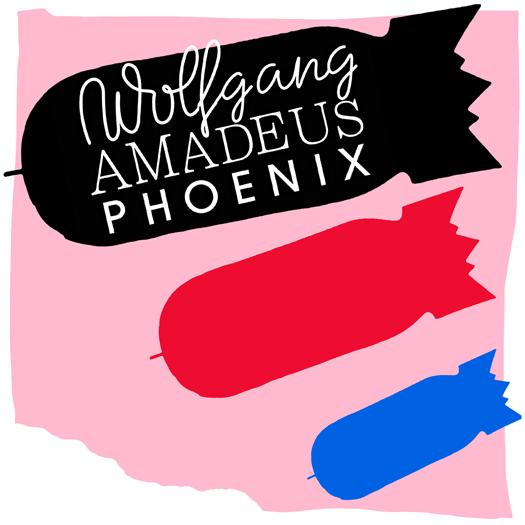
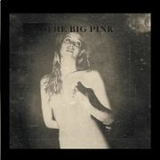
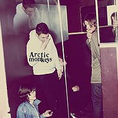
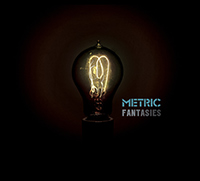
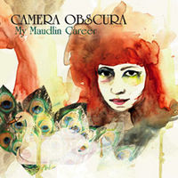
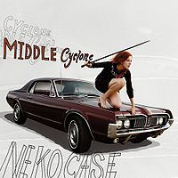
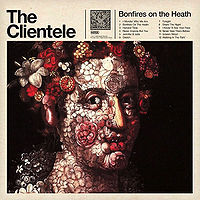
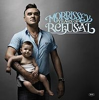
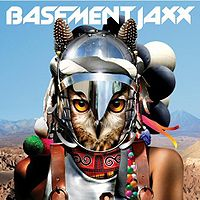
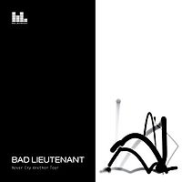

Greetings. I hope you enjoy my sampling of new songs from 2009 as much as I enjoyed making the list.
Kicking things off is French band Phoenix. With ties to both Air and
Daft Punk, it’s members have been at the forefront of the electronic
French music movement of the late 90’s and early 00’s.
Despite its cheesy title, Phoenix’s 2009 release “Wolfgang Amadeus Phoenix” achieved critical acclaim and revered status amongst indie music listeners. Advertisers were also on to this band. 1901 was featured in a Cadillac SUV television spot. The homemade Youtube montage featuring John Hughes (RIP) movies played to “Lisztomania”, the second single from this album, was also a big web sensation this year. Thanks to Michelle for pointing that out to this old fogey.
Heavy accented English female vocalist (from the souf no doubt, Lorna) – Check. Remake of classic 80’s new wave song – Check. Finally getting a rap song on the sampler – Check. I must admit, at first listen, I was none too pleased to hear what Lady Sovereign did to the song that turned me on to The Cure back in 1986. However, after repeated listens on the current, this track actually grew on me. Quite a bit, in fact. This is the second year in a row of a Cure cover on the sampler. I’m not sure if this technically counts as a rap song, so I cover my bases later in the sampler. Stay tuned.
“As soon as I love her it’s been too long. Talks of the future make me ill”. Heavy rotation on The Current (thecurrent.org) brought me to the Big Pink. They’re a new band out of London who released its debut album, “A Brief History of Love” this year. From the cover of the album, to the lyrics, and of course the beat, I became quickly hooked on these guys. Sadly, this came just after their performance at the 7th Street Entry (yeah, I know!) Thanksgiving week. Here’s hoping we hear more from these guys in the coming years.
 Album number 3, "Humbug", by Arctic Monkeys didn’t fail to disappoint this year. Amy and I were lucky enough to find ourselves curiously kidless one Friday evening in September (thanks mom) and we doubled our luck by finding ticketswere available to see the Monkeys at First Avenue. While not sold out as they were in 2007, they still provided a big time rocker of a show. Things I love about this song are the driving beat and the sneaky little guitar solo. Of course the star of the show was once again lead singer Alex Turner whose on stage swagger screamed “rock star”.
Tegan and Sara, the Canadian band consisting of twin sisters, had been on my radar enough to have heard of them prior to this year. I suspected, wrongly, I could put them in a safe box with other lilting female singer bands. There is not a bad song on their new album “Sainthood”. This isn’t because they all sound the same, either. Each tune has a distinctive style and feel. I could have chosen any of them for this sampler and they would have all been good choices. Being the 80’s kid that I am, the selected track Alligator had special appeal. The use of the term “hissy fit” sealed the deal for me. If you haven’t heard this album – go get it.
 “Who’d you rather be? The Beatles or the Rolling Stones?” Metric ponders on Gimme Sympathy. We follow with our second Canadian act of the sampler. Songs from their new album “
Fantasies” were a staple on The Current this year including their other hit song “Help, I’m Alive”. On this track, lead singer Emily Haines effectively describes being so close to musical greatness she can almost taste it. She can envision it in her mind and obviously finds inspiration by songs like “Here Comes the Sun”, Harrison’s masterpiece from “Abby Road”
Black Keys lead singer Dan Auerbach released his solo album this year, “Keep It Hid”. The guitar riff on this bluesy number recalls The Smiths classic “How Soon is Now?” which is famous for its hypnotic wah wah effect.
 The strongest musical memory I will have from 2009 is from Camera Obscura’s “My Maudlin Career”. This was, hands down, my favorite release of the year. That’s saying something given how much strong music was released this year. There’s something in Tracyanne Cambell’s voice and lyrics that just grabs me. Amy went so far as to call it an “obsession”. A vivid memory I have is of travelling up to the Smith’s cabin listening to Camera Obscura at full volume and singing at the top of my lungs. At that moment, it struck me that this is what it was to get into an album completely, thoroughly. It doesn’t happen often, but when it does it can be profoundly moving and memorable. Amy and I enjoyed them in concert with the Kapke’s at the wonderful Cedar Cultural Center. I could go on and on. I simply can’t recommend an album more.
Royksopp is paying its second visit to the sampler this year (also 2005). They are a Norwegian electronic duo whose release “Junior” was another album favorite. This track include a sample from “Do That Suff” by Parliament. I really enjoy the playful, light feel of this track. It would have been possible for me to fill the entire sampler with all electronic music I’m such a fan of the style. This (and a handful of other later) stood out as the best in that genre to me this year.
The Pains of Being Pure at Heart is a fresh New York City band that released their first self-titled album this year. I, of course, love the 80’s styled sound of these guys. What really impresses me is the sense of confidence they exude for being a young band. It’s almost the opposite of what Metric sings about. They don’t appear to be worried about being the next great indie band. They’re just making music they love and it sounds like a whole lot of fun to me.
Don’t laugh. OK, laugh, but know that over the past 24 years there’s been no group IMO that’s released music so consistently and with as high quality results as the Pet Shop Boys. What do I like about them? They’re smart. They write catchy melodies. In a world of constant change, they provide familiar comfort (not just the sound, all their albums are one word titles for example). I’m done apologizing for liking these guys. Plain and simple, their sound moves me. Did I mention Johnny Marr of Smiths fame plays on several of the songs on this album? Props to Amy for attending their show with me this year. It’s certainly not her cup of tea and she took one for the team. I only ask you listen with an open mind and remember “you don’t have to be beautiful, but it helps”.
Neko Case’s album “Middle Cyclone” topped many critical lists for album of the year in 2009. At first hear, this was not exactly my cup of tea. As I gave it more of a chance, I really started to appreciate it more and more. In addition to getting quite a fair amount of airplay on alternative stations, it was also featured as a download track for Rock Band 2. Case also used this song to promote animal causes. Interesting how
she can make getting mauled by a killer whale sweet sounding.
I love the cover which recalls classic Cars album covers
 Listen to that voice. Feel that beat. No, it’s not Quarterflash. That’s Beth Ditto and her band Gossip out of Portland, Oregon. Warner tuned me into these guys a few years ago (back when they were The Gossip) and their sound didn’t quite grab me then. Despite originating stateside, Gossip appears to have developed a larger following in the UK being featured on the Jonanthan Ross show as well as closing the John Peel stage at Glastonbury. “Music for Men” is Gossip’s fourth full release and first on major label. Let’s hope the wider distribution will get them a broader audience.
Listen to that voice. Feel that beat. No, it’s not Quarterflash. That’s Beth Ditto and her band Gossip out of Portland, Oregon. Warner tuned me into these guys a few years ago (back when they were The Gossip) and their sound didn’t quite grab me then. Despite originating stateside, Gossip appears to have developed a larger following in the UK being featured on the Jonanthan Ross show as well as closing the John Peel stage at Glastonbury. “Music for Men” is Gossip’s fourth full release and first on major label. Let’s hope the wider distribution will get them a broader audience.
“I Wonder Who We Are” is a tune I casually heard on The Current a few times this year. It has a sound that I’m instantly drawn to. I’d never heard of them until this year, but they’ve been around since 2009 and have released 6LPs in that time. They are based out of London. Everything from the vocals, to the guitars and even the slight horns eases and soothes. Listening to this music gives me the feeling of a slight summer breeze as I lounge in the shade. Not a bad sensation, huh?
 In 2009 I finally got my chance to see Morrissey live. He played in Minneapolis in April in support of his new album “Years of Refusal” (such a Moz-worthy title). While it was no guaranteed thing that the show would happen, it was marvelous to have the chance to see him perform (although he refuses to call it performing, as that’s what seals do). Morrissey had some issues this year (beyond his normal issues) resulting in slews of cancelled shows and even some stage walk offs. So very fortunate it was to get him for the whole evening. I must say it was well worth the wait. After the show, DJ Jake Rudh from Transmission (80’s new wave dance night at Club Jagr) put on a Morrissey/Smiths themed edition at the Entry. Hello! Devine, Seth and I stood and listened with grins from ear to ear. It was the first of many Transmission nights in 2009.
The concert also inspired a 6 week exclusive Morrissey/Smiths-fest to and from
work on my ipod. Back to the song… it probably won't go down as one of
his best ever, but it closes with possibly my favorite line of the year: “You’ve made yourself plain. Yes, you’ve made yourself very plain”. Ah, Mozzer…
XX is a band of 4 24-year olds from south west London. They were recommended for inclusion on this list by several people (thanks Kay and Ken). There’s a sense that these guys are the “it” band of the moment in the UK garnering lots of attention on end of year best-of lists. Their debut self-titled album consists of several very strong songs. I’d highly recommend checking it out if you like this song. Definitely a band to keep an eye on in the coming years.
It’s hard to believe, but Basement Jaxx has never appeared on one of these samplers. If for that reason alone, I include this song. Luckily it’s a good one. After launching their career in 1999 with two strong albums, they produced a couple of forgettable releases in the mid 00’s. Their latest album, Scars, appears to be a return to form. Let’s hope there’s more coming.
Danish band Asteriod Galaxy Tour was introduced to the world in an iPod touch commercial featuring this song. They’ve opened shows for Amy Winehouse and Katy Perry. Other than that, I don’t know much about these guys other than they’ve produced a very sampler-worthy song.
OK, Jen – here’s your proper rap song. And it’s a local artist to boot! I wish I got rap. I really do. This year with hipster Kapke’s help, I tried to discover rap (imagine, in 2009, “discovering” rap). I certainly learned more about it. The genres and subgenres (which interestingly enough appear to all be based on geographic location), the artists, the rivalries, the profanity! Anyway, I needed to find something for the sampler as evidence of my “growth” in this area. I actually found few choice candidates including Mos Def, Atmosphere,
and this track by Minneapolis rapper POS. He's part of the Midwestern Basement subgenre of hip hop (thanks Rhapsody). Be patient, I’m trying.
Noah’s really picked up his drum playing this year, which is great for me because I love beats. This song really sticks out for the percussive qualities as the title suggests. A little bit like a more radio-friendly version of 15 Step by Radiohead this song was also a big hit on the Current this year. “It’s Frightening” is the Brooklyn band’s second album. They’ve toured supporting Kaiser Chiefs and Spoon.
Last year Larry and Lorna suggested choosing a song from Vampire Weekend. For a variety of reasons (none good), I couldn’t make it happen. Here’s the make up. This is a track from their forthcoming album to be released in 2010 that was available for free download from the band’s website. It’s a great Christmas time song that’s light, catchy and fun. Definitely love the xylophone action.
Beck, standing sampler champion, returns with a remake of a Dylan song from the benefit album “War Child”. It was an interesting concept. Have a legendary artist pick a new(ish) artist to remake one of their songs. Dylan chose Beck (nice call!). There are some other interesting options on this album including Lily Allen covering the Clash “Straight To Hell”. Can you hear the seagull sample in this track?
 Finally… this is why we listen to music. We wait for our favorite band to finally release that new album after year of waiting and reading blogs and fan sites. Well, sort of like that. Sometimes we wait and your favorite band decides they can’t stand each other anymore. So they have an awkward, clumsy, sad public breakup over myspace and said fan sites and some of the remaining members release a new album under a new band name with some additional people added to the mix. Sigh… sorry. New Order split (boo!). Lead singer Bernard Sumner forms a new band Bad Lieutenant (yay!). Invites drummer Stephen Morris to play on only a few songs (huh?) and we get the album “Never Cry Another Tear” (yeah right) in 2009. I wouldn’t call it great and I wouldn’t call it a disappointment. It’s somewhere in the middle (closer to the disappointment side), but I made the homer call to include it in the sampler. This track sounds the most “New-Ordery” to me.
Despite that the music has ended, let's hope that the beat just goes on.
Thanks
for listening. I hope to talk to you soon about music.
Peace,
MJC